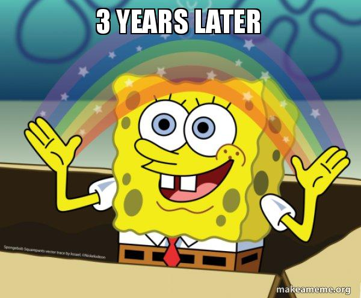

You joined Badminton your freshmen year to meet new friends and to try the sport out. Despite all of the footwork training, learning how to play the sport competitivally, and punishments your coach has given to the team after your freshmenyear, you feel motivated to improve as a player and be on the varsity team.
You are a senior and you decided to play your last season before you graduate because your ultimate goal is to reach senior night. You have been waiting for this moment since you joined the team freshman year. This season you are playing varsity 1 which is the best of the best rank there is. As the season progresses you see that your assistant coach is more focused on the more skilled players and helping them improve their skills instead of your own. You decide to brush it off and work on improving your game skills and strategies. As the season continues you have seen so many hardships and you feel like you are holing the team back. You start to doubt yourself and having lingering thoughts to quit but knowing you want to, you cant. If you did, then what was the point of being in the team for 3-4 years? You could have used that time to do extra cirriclurs but you didn't an decided to stay commited to the team. In the end, you decide to stay and play for the rest of the season.
Next